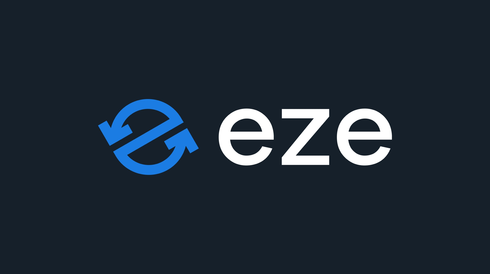
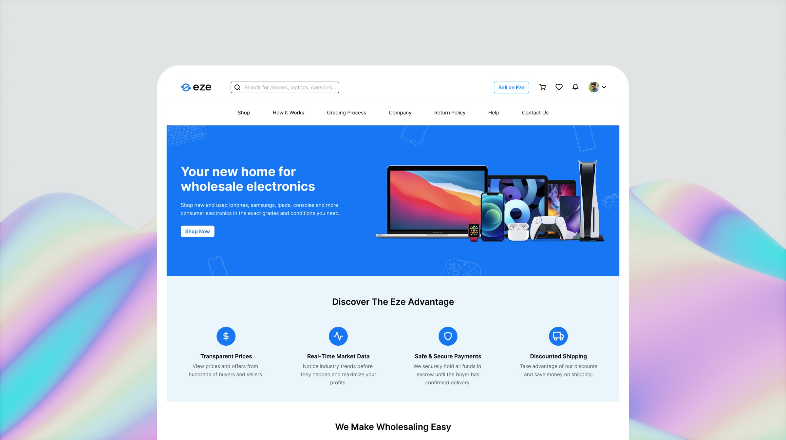
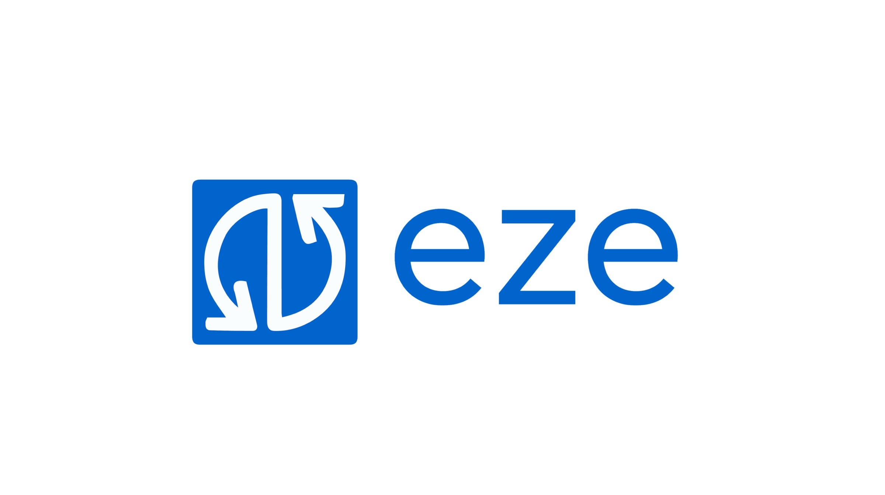
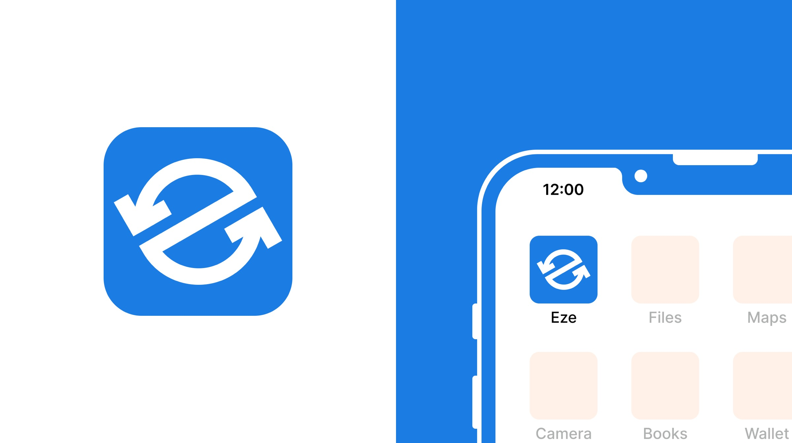
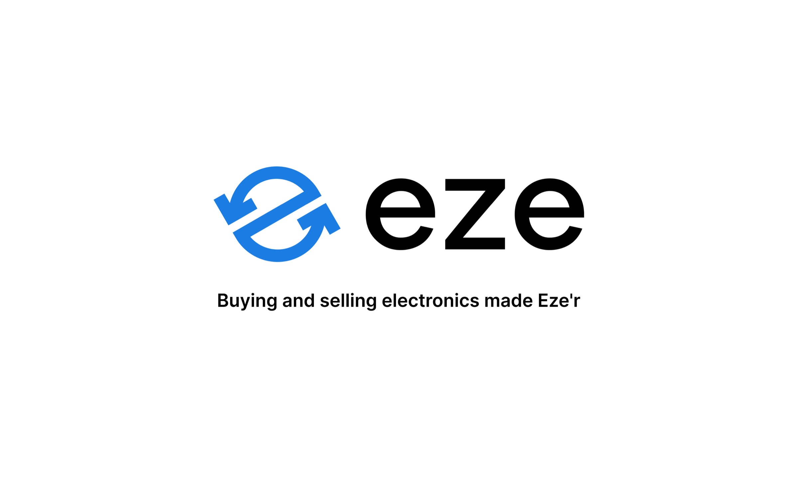
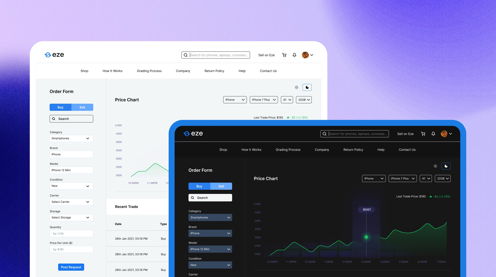

Eze A visual identity for value exchange
A visual identity for value exchange, designed to make global electronics trade feel clear, credible, and easy to recognise.
- Period
- 2020 to 2021
- Role
- Brand & Product Design Lead
- Focus
- Identity, product language, marketing systems
Give a complex marketplace a clear signal
Eze brought buyers and sellers of wholesale electronics together across markets. The identity needed to make a high-value, high-consideration exchange feel dependable from the first glance through to a completed transaction.
Show exchange
The identity needed to communicate the two-sided movement at the centre of the marketplace.
Earn confidence
The brand needed enough composure for businesses making considered purchasing and selling decisions.
Scale through use
The system had to work across product interfaces, partner materials, social profiles, and everyday communication.
An e in motion
The mark turns the letter e into a circular exchange. Two directional forms make the act of buying and selling visible, while the continuous loop gives the marketplace a simple, memorable signal.


The icon is compact enough for an app tile or profile image, while the lockup keeps the marketplace recognisable in product, sales, and partner contexts.
- Direction
- Buying and selling
- Shape
- An ownable e
- Use
- Small to large formats
Refine the familiar signal
The aim was to retain what people already recognised in Eze while giving the symbol a clearer relationship to the marketplace. The resulting mark brought the letterforms of Eze and the motion of exchange into one more coherent identity.


A palette and type system built for clarity
Dodger Blue makes Eze recognisable and active. Anchorfish Blue anchors serious information. Linen softens the system in customer-facing spaces, while black and white keep communication direct. Inter provided a practical typeface that could hold together across the interface and brand materials.

Dodger Blue
The active signal for the brand and its most visible touchpoints.
Anchorfish Blue
A stable foundation for dense information and high-contrast applications.
Linen
A warmer surface that keeps the system open and approachable.
A working identity, not a static mark
The visual language was designed to travel. The icon, logo, and colour system hold together across marketplace surfaces and external material, making each interaction feel connected to the same business.



From brand to product
The system carried into the new website and the trading platform, giving practical product surfaces the same visual confidence as the brand materials around them.
One language across the business
At Eze, the identity gave the marketplace a consistent signal across the product, partner relationships, and brand communication. That shared language became the bridge between how the business looked and how people used it.